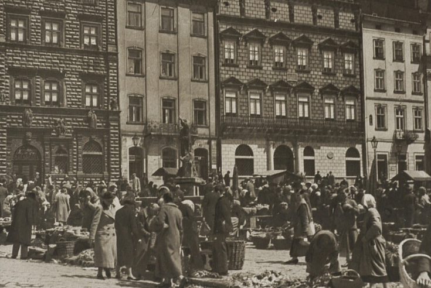

Після Першої світової війни, після поразки у ній Австро-Угорської імперії Львів волею європейських держав-переможців знову потрапив під панування Польщі. Листопадовий (1918 року) виступ українців за незалежність, утворення Західноукраїнської Народної Республіки, об’єднання з Великою Україною, хоча у підсумку таки закінчились поразкою, все ж заклали підвалини української незалежності й соборності. Панування польського авторитарного режиму у Львові у 1919-1939 роках посилювало спротив українців, консолідувало їх у боротьбі за свої права.
У вересні 1939 року внаслідок змови Сталіна з гітлерівською Німеччиною Львів потрапив до складу Радянської імперії. Об’єднання українського народу у єдиній державі і часткова українізація освіти та культури зводилася нанівець масовими і небаченими в історії тоталітарними репресіями проти західних українців. Десятки тисяч галичан було знищено, сотні тисяч вивезли у концтабори та вигнання у Сибір. Опір Української повстанської армії радянському режимові тривав до другої половини 50-х років. У 60-і та 70-і роки гучними були процеси у Львові над дисидентами В’ячеславом Чорноволом, Богданом Горинем, Іваном Гелем, Іриною та Ігорем Калинцями. Всі вони спричинилися до подальшого здобуття Україною незалежності.
Львів, який є незаперечною столицею української культури, духовності і національної ідентичності, завжди відігравав чільну роль у розвитку процесів демократії та здобуття української незалежності.
Усі державотворчі процеси становлення і утвердження української незалежності ініціювалися зі Львова. Тут відбувалися перші масові акції на підтримку незалежності, учасників яких переслідували і били спецзагони міліції.
17 вересня 1989 року у Львові відбулася найбільша на той час стотисячна демонстрація за відродження української незалежності і Греко-Католицької Церкви. Живий ланцюг соборності між Львовом і Києвом 21 січня 1990 року, коли одночасно взялися за руки мільйони українців, став віхою на шляху відновлення української держави. 3 квітня 1990 року над львівською Ратушею замайорів синьо-жовтий державний стяг. На святкування ухвалення Акта про державну незалежність України 24 серпня 1991 року наступного дня на вулиці міста вийшли сотні тисяч львів'ян.
У 1999 році Львів виступив своєрідною столицею Центрально-Східної Європи. Він став єдиним містом в історії України, яке приймало одночасно дев’ятьох керівників держав під час саміту глав держав Східної та Центральної Європи.
Львів завжди був і є детонатором націотворчих і демократичних процесів в українській державі. Наше місто стало головним оплотом Помаранчевої революції листопада-грудня 2004 року, коли про Україну заговорив увесь світ. 70% усіх львів’ян брали участь у акціях відстоювання демократії у Львові і щотретій львів’янин побував на Майдані Незалежності у Києві. Восени 2006 року Львів урочисто святкував своє 750-річчя.